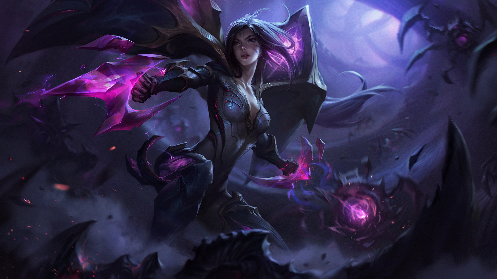

LA HIJA DEL VACÍO
KAI'SA
Reclamada por el Vacío cuando era solo una niña, Kai'Sa logró sobrevivir por pura tenacidad y fuerza de
voluntad. Sus experiencias la han convertido en una cazadora letal y, para algunos, el presagio de un
futuro que preferirían no vivir para ver. Ahora que ha entrado en una tensa simbiosis con un caparazón
viviente del Vacío, pronto llegará el momento de decidir si perdona a aquellos mortales que la llaman
monstruo y se alía con ellos para tratar de derrotar a la oscuridad que se avecina... o simplemente deja
que su mente olvide y que el Vacío consuma el mundo que la abandonó.